About Me
Yo,
I'm Arron Burgess, a generalist 3d modeller, environment designer, prop modeller, PBR material artist/texture artist, software development student, gamer and appreciator of the natural world.
My experience in level design initially stems from creating third party maps for the first Unreal (also re-released as Unreal Gold) back in 2002 or 2003, to Half-Life, to Quake 2, to Half-Life 2, to GZDoom, to idTech 4.5 (the engine that runs Doom 3 BFG Edition), so on and so forth. Creating game worlds is a strong passion of mine, to which as a subject there are many facets of.
3d Modelling is not dissimilar from creating 3d world geometry for most of these older titles. Typically most of these engine's rely on world geometry format known as BSP (binary space partitioning), but what 3d modelling and level design have in common is that they all consist of vertexes, edges and polygons - and anyone creating experiences with these needs to be conscious of their budget (mostly polygons) on screen at one time. Newer engines certainly make use of new hardware features found in newer GPU's, supporting a higher polygon budget. Older engines such as Unreal Engine 1 that powers Unreal currently only renders everything from the CPU, as the game was developed before graphics cards were a standard for gaming, therfore one has to be more artificially stringent with their polygon and performance budget.
I started dablling with 3d modelling for my Unreal 1 levels back in 2013, at first creating simple static meshes and props like intricate fluorescent light fixtures. Perhaps around the same time I started using GIMP to create new textures. At first my textures were either basic edits of pre-existing Unreal textures or edits of photo sources.
When discovering highpoly to lowpoly baking workflows akin to id Software's method of creating all of the models and materials in Doom 3 (actually it's a method that's quite standard practice in the common day), I feel as though my ability to create things without restraints really exploded. This method opens the door to PBR materials among so much more and I feel I can create anything I really want to.
My love for gaming spans all the way from my early years. At the age of 3 in 1993 I was playing on my Dad's Atari ST and Spectrum, afterwards I would be playing various games on the Sega Megadrive after it was handed down to me from my older cousin. I moved onto PC gaming also around the same time I started getting into the Playstation. My very first games on the PC included Quake, Hexen, Commandos: Behind Enemy Lines, Populous, Dungeon Keeper and potentially more.
My 3d art is complimented by my love of the natural world and historical castles (which we have alot of here in the UK).
Toolset
My tools of the trade include programs such as Blender, Unreal Editor, Substance 3d Painter, GIMP, TrenchBroom, Substance Designer and Hammer.

Unreal Editor is a CSG and BSP level creation tool that is supplied with the first game in the franchise, known simply as Unreal. The first two games, Unreal and Unreal Tournament were made freely available via OldUnreal (The OldUnreal Site) due to express permission from Epic Games. Both games come included with their latest community updates, including UnrealEditor 2.2.

Blender is a free, versatile powerhouse of many trades and can be used for alot of things, but it's main purpose is for 3d modelling and animation. Blender can be obtained from it's foundation's website here.

Substance 3d Painter is now unfortunately owned by Adobe, but I think perpetual licenses still exist for purchase on Steam! Steam store page for Substance 3d Painter 2025.

GIMP stands for GNU Image Manipulation program and is a free equivilent to Photoshop. This program is good for loading and modifying different image formats. Gimp is housed here.

TrenchBroom is a popular editor in the idtech engine space and Quake community. There are a couple of forks available, including one for RBDoom3-BFG. The standalone tool can be found here!
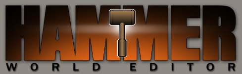
Hammer is the level editor for Valve's Half-Life. It's also used for Half-Life 2, Team Fortress 2, Counter-Strike, Half-Life: Alyx and a few more. If you obtain any of those games on Steam you will be able to acquire the tool for free through Steam!
3D Models / My works
Voreblynn Soldier
Front Right
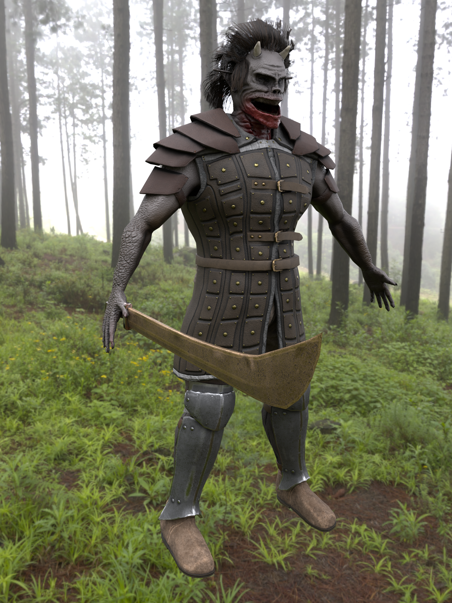Front Left

Back Left

Lower Left
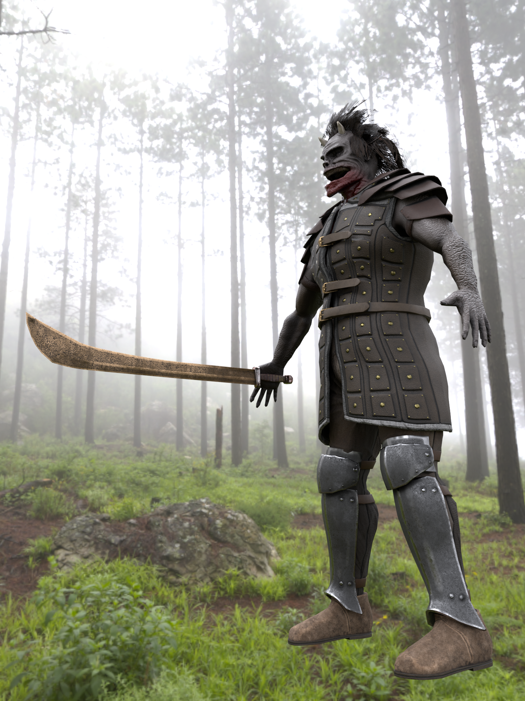Voreblynn Scout
Front Right
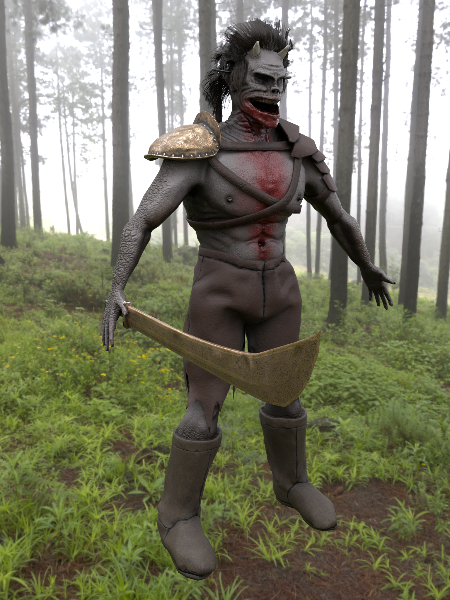Front Left
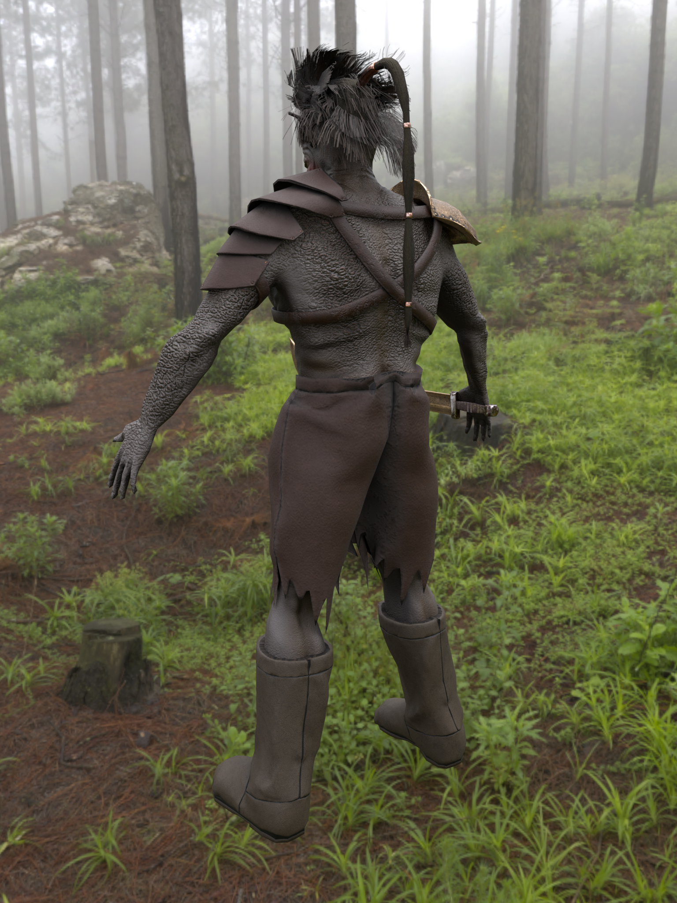Human Male Able Bodied
No Equipment
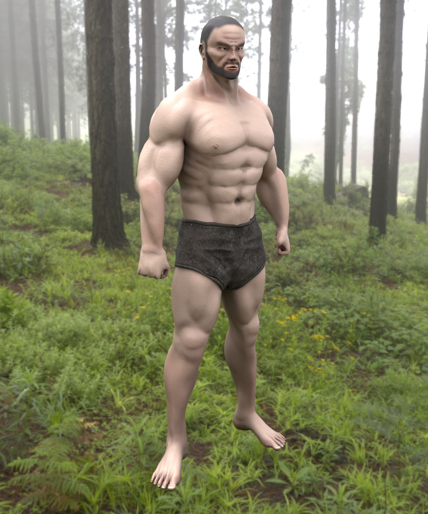Customizable items

Unique Helmet 1
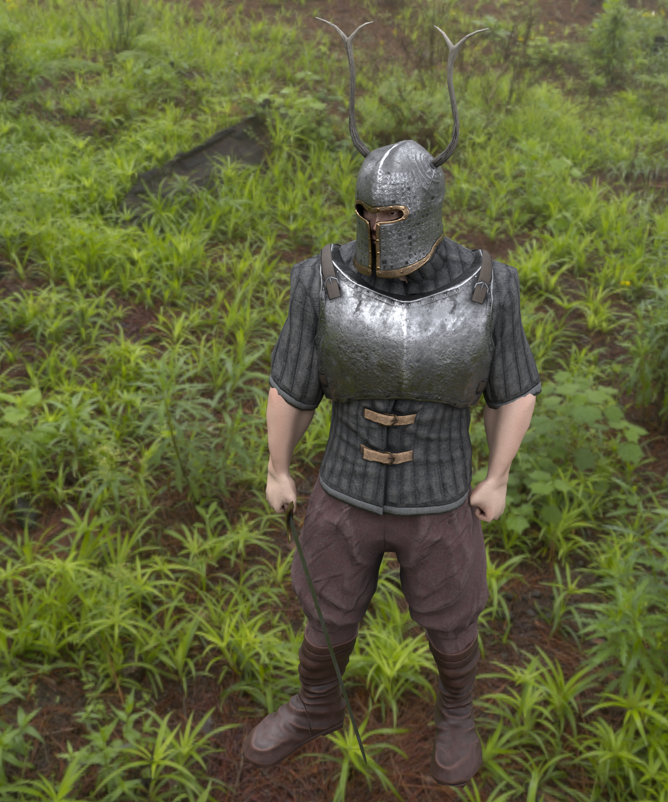Unique Helmet 2

Unique Helmet 3
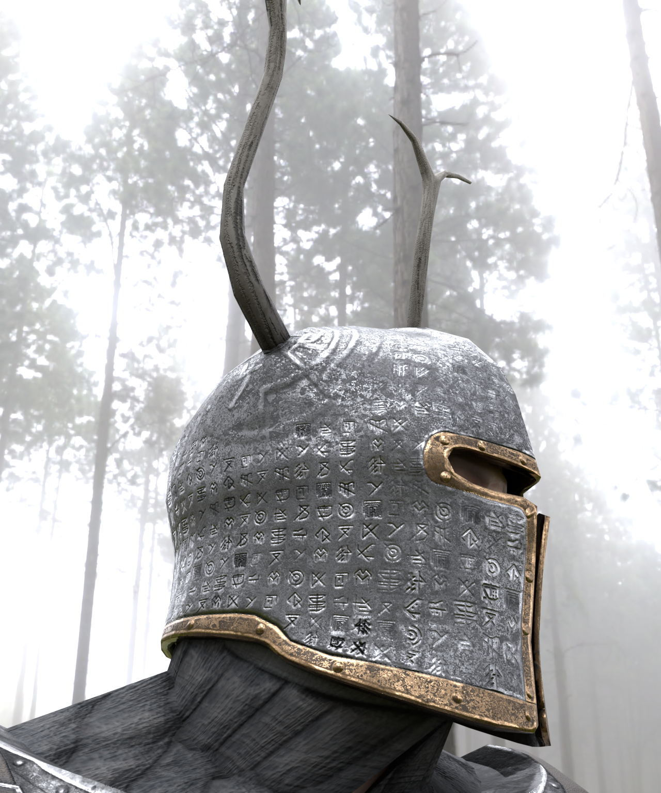Unreal Skaarj recreation
Skaarj
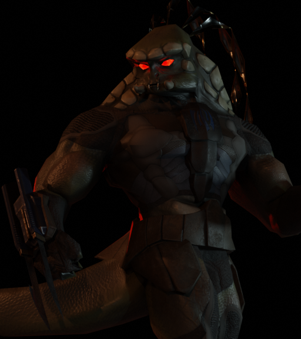Skaarj Neutral

Skaarj Scout

Skaarj Soldier

Assault Soldier

Materials and Textures
Releases
Industrial Texture set #1 from Terra Mining Region
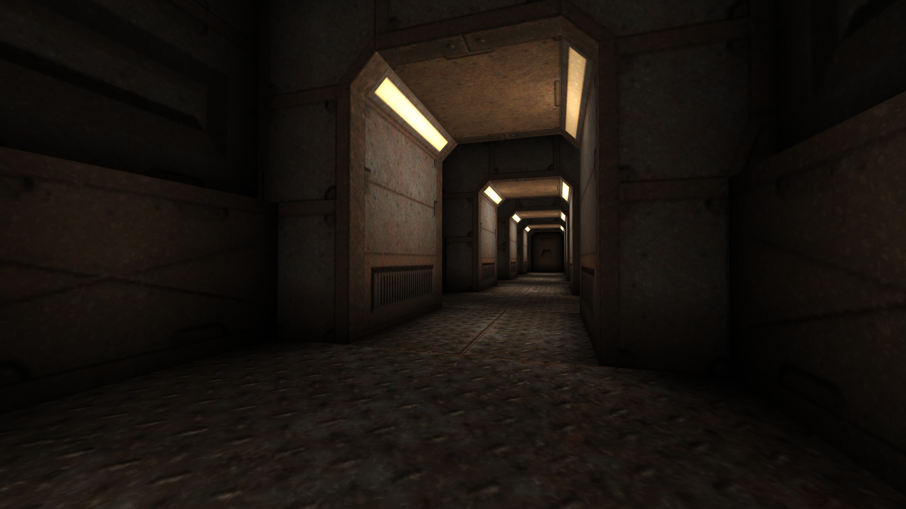
 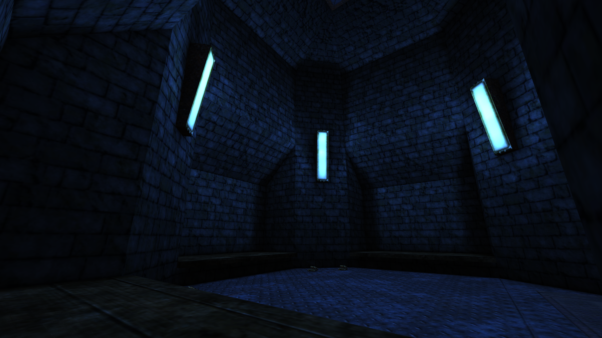
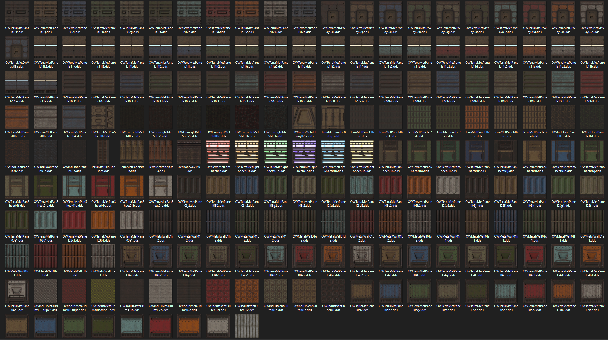
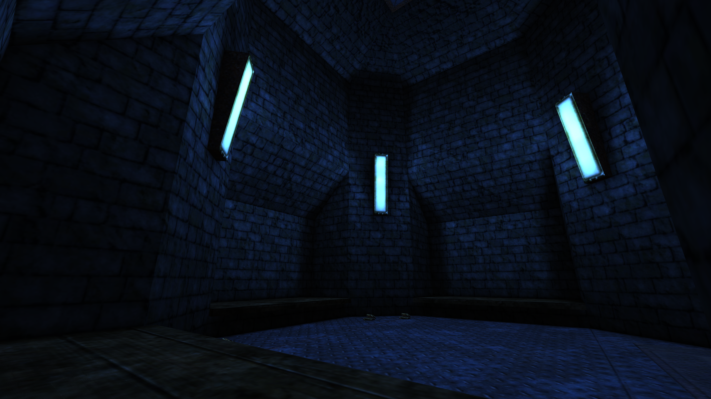
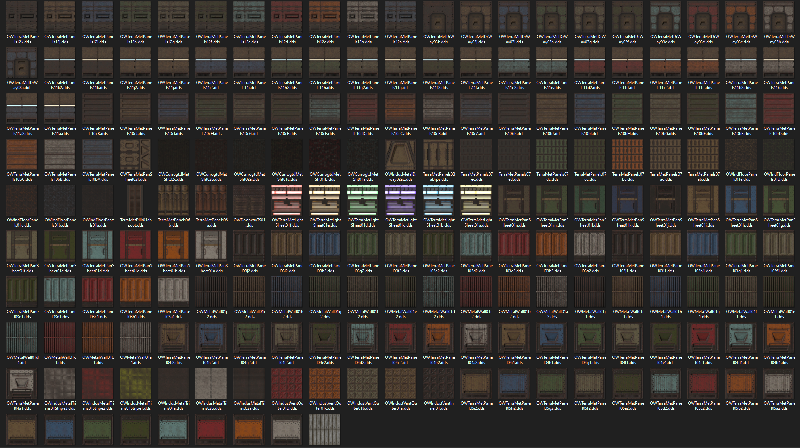